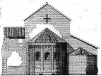

|
Cenni storici
Sulle
origini della Pieve di Viguzzolo, ancora oggi esistente e dedicata a Santa
Maria Assunta, non sappiamo nulla di preciso. Gli strumenti che abbiamo
per risalire all’anno di costruzione ci permettono soltanto di approssimare
tale data intorno al Mille.
La nostra Pieve non fu la prima Chiesa sorta a Viguzzolo: essa nacque
nelle adiacenze di un altro edificio religioso costruito precedentemente.
Un documento (1) dell’893 attesta che gi� in quel
periodo esisteva una Pieve nel nostro Comune: "…Vicucciolo cum
mercato annuale qui celebrandam Missam Sancti Martini convenire solet…"
, ma questo luogo, ove si celebrava la Messa nel giorno di San Martino
non � certo quello ancora oggi esistente. Infatti un accurato e complessivo
esame architettonico ci dimostra che la nostra Pieve fu costruita posteriormente
al IX secolo e cio� verso l’XI. La presenza di elementi architettonici
risalenti al 900 convalidano semplicemente l’ipotesi che essa sia
stata costruita utilizzando parti della chiesa che poteva essere posta
nelle adiacenze di cui noi, oggi, non conosciamo nulla.
Alla fine del XII secolo diversi documenti indicano l’esistenza della
nostra Pieve. Da essi sappiamo anche che, alla fine del XII secolo, annessa
alla Chiesa Plebana di Viguzzolo, vi era una canonica con un collegio
formato da un Arciprete e quattro Canonici. Questo fu un periodo di fioritura
per la nostra Pieve, periodo che fu caratteristico, per il XII e XIII
secolo, di tutte le chiese plebane dell’Italia Centro-Settentrionale.
Dopo questa particolare fase le Parrocchie Rurali, proprio perch� erano
strettamente legate alle esigenze del popolo, persero quell’accentramento
e quella importanza che avevano caratterizzato le loro origini.
La societ� comunale stava fiorendo un po’ dappertutto e il bisogno
di avere luoghi sacri indipendenti dalle Pievi e pi� comodi per lo svolgimento
delle funzioni religiose fece si che le Cappelle, che avevano sempre fatto
parte della giurisdizione delle chiese plebane, almeno nel Settentrione,
assorgessero anch’esse alla dignit� di Parrocchie spezzando cos�
quell’accentramento tipico delle Pievi.
Anche Viguzzolo, che nel XIII secolo era gi� Comune, cominci� ad emarginare
la Chiesa Plebana e venne a scegliere, poco per volta, come luogo di culto,
l’oratorio di San Bartolomeo, posto al centro dell’abitato stesso.
Abbiamo a questo proposito diversi documenti che dimostrano che molto
prima del 1500 tutte le funzioni religiose si svolgevano nell’oratorio
di San Bartolomeo. Inoltre da un documento (2) del 20
dicembre 1564, sappiamo che la Pieve era in uno stato di abbandono e di
deperimento notevole conseguentemente alla scelta di un nuovo centro di
culto.
La situazione di incuria della nostra chiesa plebana continu� a crescere
con l’andare del tempo. essa, ormai, aveva ceduto le sue fonti di
rendita all’oratorio di San Bartolomeo, divenuto chiesa parrocchiale
ed usufruiva soltanto dell’elemosina di cento lire di Piemonte del
Comune e delle offerte di alcuni benefattori.
Nel 1570 l’Arciprete Don Tesco Ribrocco fece riparare il tetto che
era la parte pi� diroccata, provvide anche a piccoli restauri ma non riusc�
a migliorare di molto la situazione generale che, anzi, continu� a peggiorare
ancora per parecchio tempo.
Nel 1781 la "Compagnia del Suffragio" vers� dodici zecchini
d’oro al Comune affinch� provvedesse alla costruzione di un campanile.
La piccola torre campanaria tuttora esistente pu� risalire a qualche secolo
dopo la costruzione della Pieve ma non � sicuramente quella che il Comune
avrebbe dovuto costruire nel 1781.
Anche quando la nostra chiesa plebana pass� all’amministrazione comunale
non abbe dei lavori di restauro rilevanti. Infatti rimase chiusa al culto
per molto tempo e, siccome nella sua parte anteriore si trovava un cimitero,
venne costruita nelle sue adiacenze una chiesa intitolata a Santa Maria
delle Grazie per lo svolgimento delle esequie.
Neppure nel 1905, data della fine del restauro del pavimento, fu riaperta
al culto. Non bastava certamente un pavimento nuovo per ridare alla chiesa
plebana un aspetto decente e per permettere la celebrazione delle funzioni
religiose. Nel 1935 il Comune, dopo aver trasferito il cimitero, si preoccup�
di farla restaurare e nel 1938 essa riprese nuovamente il suo aspetto
originario di testimonianza dell’arte lombarda che ebbe cos� grande
diffusione nell’Italia Settentrionale.
Note
1) Questo documento fa parte di una investitura in cui l'Imperoatore
Lamberto donava a Eurardo, probabilmente conte di Tortona, la "curticela
in Vicuciolo" col mercato annuale che si svolgeva nella ricorrenza
di San Martino.
2) Da questo documento risalente al 20 dicembre 1564
e cio� al giorno della visita del Vescovo di Tortona, Mons. Gambara, a
Viguzzolo, possiamo vedere che la nostra Pieve � intitolata a Sancta Maria
Assunta de Ripa Padi. tenedo conto che il paese dista dal Po, in linea
d'aria, non meno di 16 km, � difficile spiegarsi il "Ripa Padi".
Due sono le ipotesi possibili: o la Pieve ha ricevuto il tutolo e la dote
di una chiesa costruita sulle rive del Po o il "Ripa Padi" �
da considerarsi "ripa padi" cio�, secondo Mons. Goggi, la riva
della roggia che scorre ancora attualmente nelle sue adiacenze.
|
|
indice
presentazione
formazione delle pievi
cenni
storici
descrizione architettonica

prospetto
posteriore
disegno
di
Ferdinando Gavarini
|